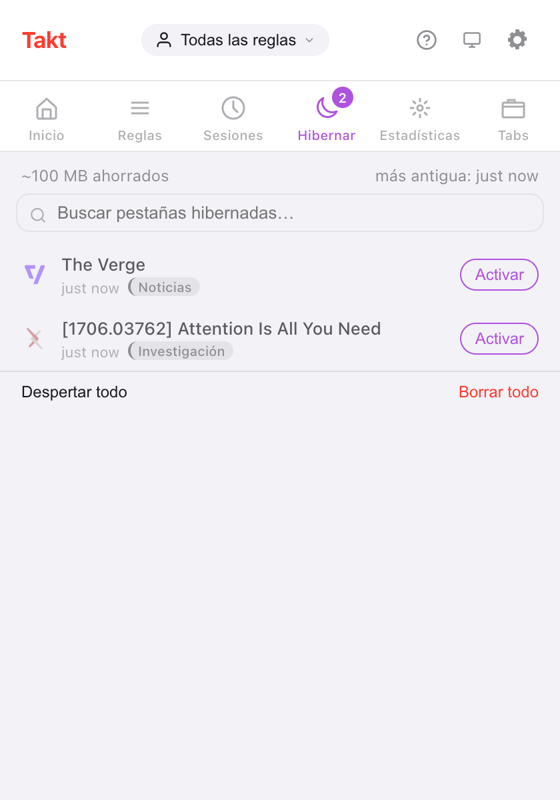

Respuesta corta: Takt gestiona las pestañas inactivas en dos fases. Suspender descarga una pestaña pero la deja en la barra de pestañas. Hibernar la cierra y guarda su estado para que un clic la traiga de vuelta.
- Free: suspensión automática tras 15 minutos a 4 horas de inactividad, una lista de pestañas que nunca se suspenden e hibernación manual de hasta 5 pestañas.
- Premium: hibernación automática por tiempo de inactividad, por número de pestañas por ventana o al terminar un horario, y hasta 200 pestañas hibernadas.
- Todo se queda en tu dispositivo. Sin cuenta, sin analíticas.
¿Qué diferencia hay entre suspender e hibernar una pestaña?
Las dos cosas liberan memoria. La diferencia está en adónde va la pestaña.
| Suspendida | Hibernada | |
|---|---|---|
| Barra de pestañas | Se queda, en gris | Desaparece; aparece en el panel Hibernar de Takt |
| Cómo | Descarte de pestañas propio de Chrome | Se cierra la pestaña y Takt guarda su estado |
| Vuelta | Haz clic en la pestaña; la página se recarga | Haz clic en Activar; la pestaña se vuelve a abrir donde estaba |
| Manual | Recomendaciones de suspensión (panel Premium) | Gratis, hasta 5 pestañas |
| Automática | Gratis | Premium |
¿Cómo hiberno una pestaña a mano?
- Instala Takt desde Chrome Web Store.
- En la pestaña que quieres apartar, abre el popup de Takt y haz clic en Hibernar pestaña. O haz clic derecho en la página y elige Hibernar esta pestaña.
- La pestaña se cierra y Chrome muestra una breve notificación "Pestaña hibernada".
- Para recuperarla, abre el panel Hibernar del popup y haz clic en Activar.
Takt guarda la URL, el título, el favicon, el nombre y el color del grupo, la ventana, la posición en la ventana, si estaba fijada, la posición de scroll y la hora a la que la hibernaste. Al activarla, la pestaña se vuelve a abrir en su ventana, en su posición anterior, dentro de su grupo y con el scroll donde estabas.
Si la misma URL ya está abierta, Takt te pregunta antes de despertarla, para que no acabes con un duplicado.

La cifra "~100 MB ahorrados" es una estimación fija: Takt cuenta 50 MB por pestaña hibernada. No mide las pestañas que cierra.
¿Cómo descargo automáticamente las pestañas inactivas?
La suspensión automática es gratis y viene activada por defecto. Cada 5 minutos, Takt descarga las pestañas que llevan inactivas más tiempo que tu umbral: 15 minutos, 30 minutos (el valor predeterminado), 1, 2 o 4 horas. Se configura en Opciones → Settings → Tab Lifecycle.
Inactiva significa el tiempo transcurrido desde que la pestaña estuvo activa o terminó de cargar por última vez. Takt nunca suspende:
- la pestaña activa, ni una pestaña que aún está cargando;
- las pestañas que reproducen audio;
- las pestañas fijadas;
- las pestañas que coinciden con tu lista Never suspend these tabs.
La lista de pestañas que nunca se suspenden admite un patrón por línea, con * como comodín. *://mail.google.com/* mantiene Gmail cargado. La lista también protege las pestañas de todos los activadores de hibernación automática que se describen más abajo.

¿Puede Chrome hibernar pestañas automáticamente? Premium
Con Premium, Takt tiene tres activadores:
- Tiempo de inactividad. Una pestaña que ya está suspendida y lleva inactiva más tiempo que tu plazo se hiberna. Puedes elegir entre 5 minutos y 7 días; el valor predeterminado es 2 días.
- Límite de pestañas. Cuando una ventana supera tu límite (de 15 a 100 pestañas, 30 por defecto), Takt hiberna las pestañas usadas hace más tiempo hasta volver al límite. Si cierras una pestaña, la última que se hibernó vuelve a esa ventana. Cada ventana se cuenta por separado.
- Fin del horario. El horario de un perfil puede hibernar todas las pestañas elegibles cuando termina su franja. Activa Hibernate tabs when schedule ends en Profiles.
Con los activadores de inactividad y de límite de pestañas, Chrome muestra durante 10 segundos una notificación con un botón Undo. Pasado ese tiempo, la pestaña sigue esperando en el panel Hibernar.
¿Es esto otro The Great Suspender?
Es una pregunta razonable. En 2021, Google retiró The Great Suspender después de que se encontrara código malicioso en una versión publicada tras su venta. Mucha gente dejó de fiarse de los suspensores de pestañas a raíz de aquello.
Esto es lo que Takt hace distinto, y lo que puedes comprobar:
- Las pestañas suspendidas conservan su URL real. Takt llama a la función de descarte propia de Chrome. No cambia tu página por una página de la extensión, así que si desinstalas Takt tus pestañas se quedan como están.
- Las pestañas hibernadas se quedan en tu dispositivo. Los registros viven en el almacenamiento local de Chrome. Solo salen de tu equipo si configuras tú mismo la sincronización con Drive o con una carpeta.
- Sin cuenta, sin analíticas, sin telemetría. Los permisos adicionales son opcionales y solo se piden cuando una función los necesita. Consulta cómo mantiene Takt tus datos en local.
Aun así, tienes que fiarte de quien publica las actualizaciones de cualquier extensión que instales. Lee los permisos que pide.
¿Basta con el Ahorro de memoria de Chrome?
Muchas veces, sí. Si solo quieres que las pestañas en segundo plano dejen de usar memoria, el "Ahorro de memoria" integrado en Chrome no cuesta nada y no necesita ninguna extensión.
Hay dos quejas que se repiten: las pestañas se recargan cuando vuelves a ellas, y algunas pestañas inactivas nunca se duermen. La suspensión de Takt tiene también el primer inconveniente. Una pestaña suspendida se recarga al hacer clic en ella, porque es el mismo tipo de descarte.
Lo que añade Takt es control. Tú eliges el umbral de inactividad, tú indicas los sitios que nunca debe tocar, y la hibernación saca las pestañas de la barra por completo sin perder el camino de vuelta.
¿Cuáles son los límites?
| Free | Premium | |
|---|---|---|
| Suspensión automática y lista de pestañas que nunca se suspenden | Sí | Sí |
| Hibernación manual | Sí | Sí |
| Pestañas hibernadas a la vez | 5 | 200 |
| Hibernación automática por inactividad, límite de pestañas u horario | No | Sí |
Las pestañas fijadas y las que reproducen audio no se pueden hibernar. Cuando llegas a tu límite, Takt no hiberna más hasta que despiertes o borres algunas.
Pon una pestaña a dormir. Despiértala justo donde la dejaste.
Añadir Takt a Chrome, gratisPreguntas frecuentes
¿Qué diferencia hay entre suspender e hibernar una pestaña?
Una pestaña suspendida se descarga, pero sigue en la barra de pestañas y se recarga al hacer clic. Una pestaña hibernada se cierra; Takt guarda su estado y la vuelve a abrir cuando haces clic en Activar.
¿Cuántas pestañas puedo hibernar gratis?
5 a la vez en el plan Free y 200 en Premium (3 $/mes o 30 $/año). La suspensión automática no tiene límite y es gratis.
¿Es Takt otro The Great Suspender?
Takt suspende con el descarte propio de Chrome, así que las pestañas conservan su URL real. Las pestañas hibernadas se quedan en el almacenamiento local de tu dispositivo. Sin cuenta, sin analíticas, sin telemetría.
¿Las pestañas hibernadas sobreviven a un reinicio del navegador?
Sí. Se guardan en disco, no en memoria. Al arrancar, Takt descarta cualquier registro cuya URL ya vuelva a estar abierta.